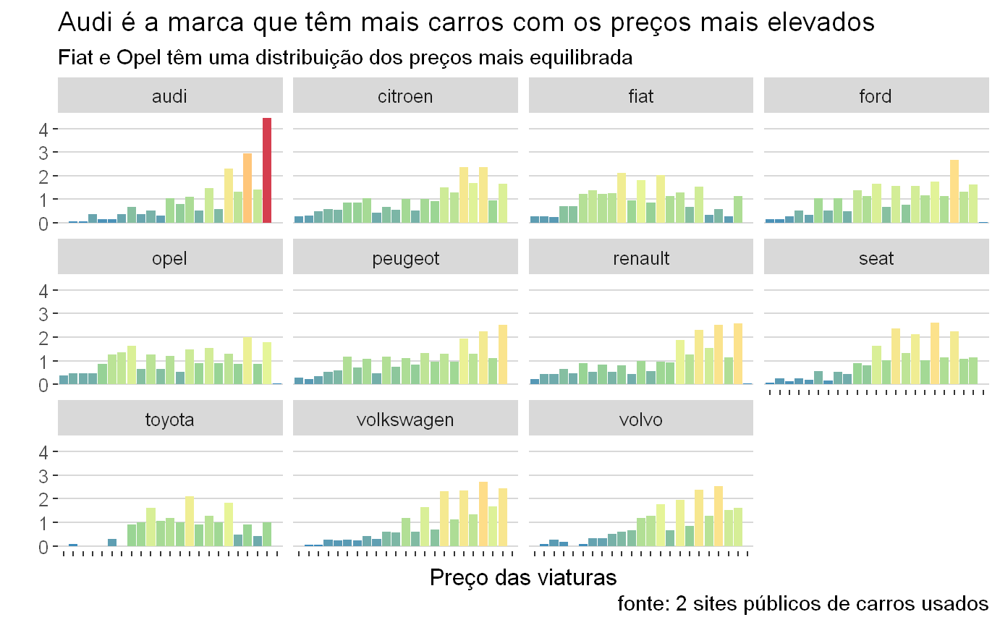
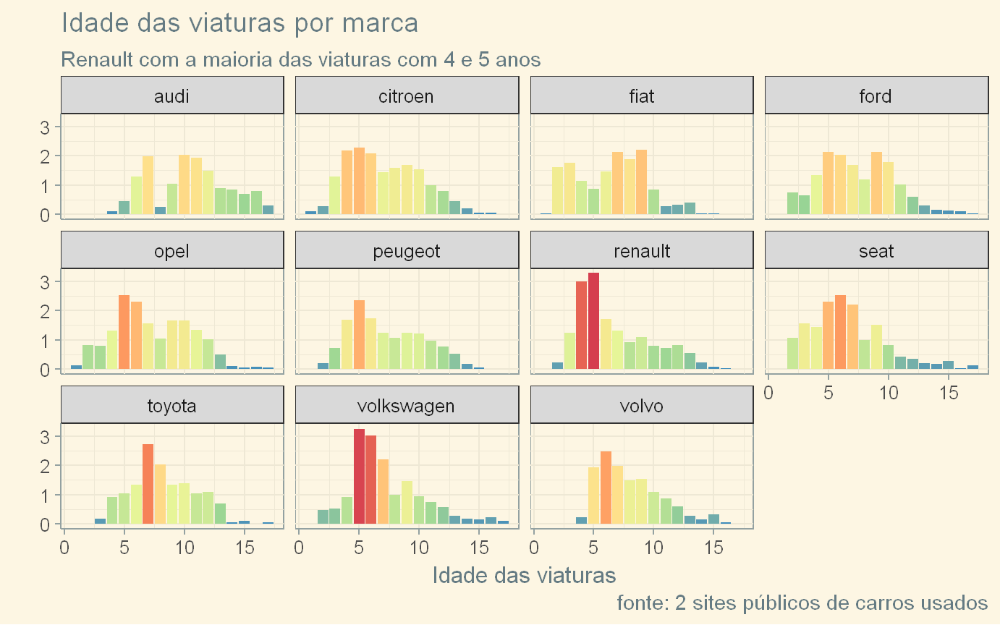
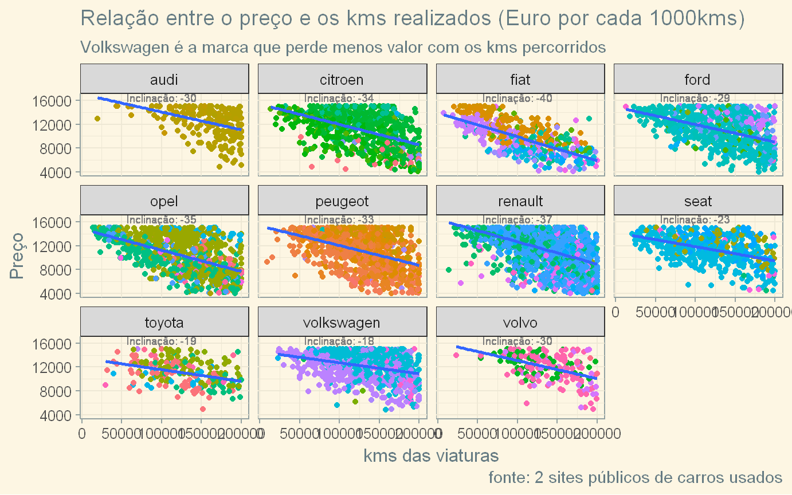
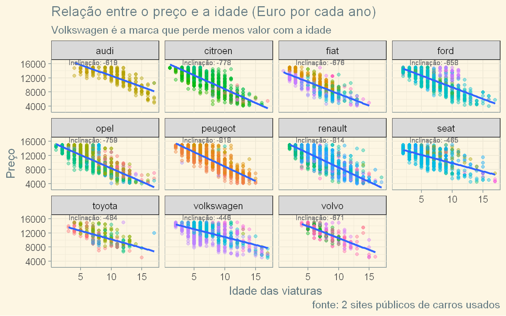

By António Cruz | January 6, 2017
Vamos supor que você pretende comprar um carro usado. O que faz?
Bem, presumo que das primeiras coisas é consultar algum site de compra e venda de carros usados e procurar algum carro com as características que considera relevantes de forma a ter uma ideia das alternativas e preços. Provavelmente até visitará algum stand recomendado por um amigo seu ou que fica perto da sua casa ou trabalho.
Mas, qual a melhor compra que pode fazer?
E se que quiser vender o meu carro? qual o preço que devo pedir?
Dependendo dos seus objetivos, se é comprar ou vender, se já escolheu a marca e modelo ou se apenas tem um limite de valor, se privilegia o preço, a idade os kms, todas estas questões vão influenciar como são recolhidos os dados, como é feita a análise exploratória e criados e testados os modelos ou simulações.
Enquadramento e pressupostos
Considerando que este exercício é meramente académico e pretende demonstrar algumas abordagens possíveis ao problema, vamos apresentar análises mais genéricas e variadas.
Vou também dividir este trabalho em duas partes, para o documento não ser tornar demasiado extenso e cansativo para o leitor.
A primeira parte incluirá a recolha, tratamento e análise exploratória dos dados e na segunda parte iremos construir alguns modelos e retirar conhecimento dos dados que nos permitam tomar decisões informadas.
Para simplificar vou considerar alguns pressupostos:
Quero um carro a gasóleo
Pretendo um carro que tenha mais de 20 000kms e menos de 200 000 kms.
Não quero gastar mais de 15 000€ e talvez só considere carros a partir de 4 000€ (quero um carro jeitosito)
Não tenho preferência por marca ou modelo
Com estes pressupostos iniciais passamos a fase seguinte que é a da recolha dos dados que possam permitir encontrar respostas.
Recolha de dados
Como em todos os processos de decisão, é necessário obter alguma informação prévia para podermos tomar uma decisão informada.
Em conformidade pesquisei informação sobre viaturas usadas em dois sites de referência em Portugal selecionei viaturas que cumpriam os meus pressupostos.
Isso resultou na recolha de dados acerca de 12462 viaturas.
A maioria da informação nos dois sites é idêntica ou muito semelhante pelo que conseguimos criar um conjunto de dados único e estandardizado.
No entanto os dados recolhidos necessitam de algum tratamento prévio antes de poder ser utilizado em modelos ou simulações. Os tratamentos mais comuns resultam de dados incompletos, errados, sem relevância para a análise.
Limpeza e transformação dos dados
É sempre necessário, também, proceder a alguma engenharia de variáveis (feature engineering). Por exemplo, a cilindrada consta apenas de descrição da viatura e como nós queremos usar essa informação posteriormente no modelo, é necessária extrai-la. O mesmo vamos ter de fazer para a marca e modelo.
Por outro lado, temos algumas marcas com poucas viaturas e, com poucos exemplos, as conclusões são sempre perigosas pelo que decidi ficar apenas com as marcas que tenham mais de 250 viaturas.
Temos outras questões de normalização que também acontecem sempre e que é necessário corrigir. Como recolhemos dados de duas origens distintas, existem dados que representam o mesmo objeto, mas são descritos com nomes diferentes. Num dos sites as viaturas tem como marca volkswagen e no segundo site são classificadas como vw. Esta situação também será corrigida.
Depois de efetuadas as correções iniciais, ficamos com a informação de 8900 viaturas, uma redução de 28.6%, sendo que 3294 viaturas foram recolhidas do site1 e 5606 do site2.
Mas ainda não terminamos. Existem questões adicionais que devem ser abordadas, nomeadamente:
modelos de marca com poucas viaturas
anos de matricula muito antigos
Relativamente à primeira questão, para já não vamos fazer nada. No que diz respeito ao ano de matricula, existem de facto um número reduzido de viaturas com matricula anterior a 2000, que sendo muito antigas, pese embora estarem dentro do intervalo de kms inicialmente definido, não nos interessam. Assim iremos eliminar as viaturas anteriores com matricula anterior ao ano 2000.
Depois de um novo round de alterações, ficamos com a informação de 8869 viaturas, uma redução de 28.8% relativamente ao número inicial.
Uma outra alteração que vamos fazer e que nos poderá ser util, nesta fase não sabemos, é criar novas variáveis com base na informação existente:
a idade da viatura. É um processo muito simples já que a única coisa que fazemos é subtrair a 2017 o ano de matricula. Assim, uma viatura de 2016 têm um ano e outra de 2010 têm 7 anos.
kms por ano. Variável igualmente simples já que nos limitamos a dividir o número de kms pela idade
É claro que estamos a simplificar e tratar uma viatura de dezembro da mesma forma que tratamos outra do mesmo ano, mas de janeiro. É uma questão de simplificação, mas poderíamos facilmente tratarmos em meses em vez de anos, caso tivéssemos nos nossos dados o mês de matricula (por acaso temos para um dos sites mas não para o outro).
A titulo de exemplificação, porque em problemas reais isto acontece com frequência, poderíamos prever o mês de matricula das viaturas em falta (se não fossem muitas) com base nos kms, marca e modelo (por exemplo). Assim poderíamos ter mais uma variável no modelo.
Nesta fase já temos um conjunto de dados suficientemente preparados para podermos fazer uma análise exploratória.
Análise exploratória
De que dados dispomos, neste momento?
Temos um conjunto de 8869 viaturas que são caracterizadas por 10 variáveis.
A estrutura dos nossos dados é a seguinte:
## veiculo marca modelo preco
## Length:8869 renault :2184 megane :1213 Min. : 4000
## Class :character peugeot :1109 astra : 484 1st Qu.: 8990
## Mode :character opel :1008 golf : 446 Median :11850
## volkswagen: 926 clio : 402 Mean :11178
## citroen : 904 ibiza : 399 3rd Qu.:13500
## ford : 781 c4 : 345 Max. :15000
## (Other) :1957 (Other):5580
## kms idade potencia cilindrada
## Min. : 7484 Min. : 1.000 Min. : 50.0 Min. :1.200
## 1st Qu.: 99880 1st Qu.: 5.000 1st Qu.: 90.0 1st Qu.:1.400
## Median :133000 Median : 7.000 Median :105.0 Median :1.500
## Mean :129368 Mean : 7.182 Mean :100.3 Mean :1.553
## 3rd Qu.:161162 3rd Qu.: 9.000 3rd Qu.:110.0 3rd Qu.:1.600
## Max. :200000 Max. :17.000 Max. :225.0 Max. :3.000
##
## kms_ano site
## Min. : 1156 site1:3284
## 1st Qu.:14286 site2:5585
## Median :18200
## Mean :20095
## 3rd Qu.:24250
## Max. :99148
## Podemos igualmente dar uma espreitadela a 20 registos selecionados de forma aleatória.
Por marca
Podemos verificar que a maioria das viaturas que fazem parte da nossa amostra são da marca Renault e representam 24.6%.
Não é de mais destacar que nós temos misturadas viaturas sedan, compactas, de serviço e carrinhas de diferentes modelos na amostra e que esse facto tem obviamente impacto nas análises e conclusões que tiramos.
Apesar de termos retirado da amostra as marcas com poucas viaturas, temos modelos dentro das marcas que possuem muito poucas viaturas. Para percebermos melhor esse fenómeno, apresentamos a treemap seguinte onde poderão com o cursor em cima do conjunto de modelos de uma marca, clicar e ver apenas os modelos dessa marca.
A peugeot é a marca com mais modelo (20), seguida da fiat (18) e da citroen (15).
Por preço
Relativamente aos preços, encontrei algumas surpresas nos dados. Eu não percebo muito do mercado de carros usados, mas considerando que estamos perante carros a gasóleo com até 17 anos de idade e com até 200 000km, e considerando as análises já efetuadas em que a maioria das marcas e modelos presentes na nossa amostra são da gama média, num mercado como o português, devo ser sincero, estava à espera de valores mais baixos.
Vamos ver então a distribuição das nossas viaturas por preço:
Podem utilizar o rato para fazer zoom. Os bins são de 200€ cada. Este histograma é muito interessante porque mostra claramente a jogada do preço psicológico. Existe, para todos os intervalos de 1000€, um padrão: muito poucas viaturas a seguir a cada milhar e depois a grande maioria das viaturas está concentrada próxima do milhar seguinte.
Mas esta distribuição não será igual para todas as marcas. E queremos também perceber isso e de que forma os preços variam por marca. É o que tentaremos verificar no gráfico seguinte:

Uma explicação prévia. Como existem marcas com muito mais viaturas que outras, nomeadamente a Renault, se me limitasse a criar o gráfico na escala normal, o grande número de viaturas Renault iria impedir que conseguíssemos perceber a distribuição dos preços para a maioria das marcas. Assim, fiz uma normalização prévia à escala de contagem: como podem verifica a escala varia de 0 a 4 e representa, em cada marca, o numero de viaturas de cada escalão de preços a dividir pela média de viaturas por escalão de cada marca.
Por exemplo, no caso da Audi, o ultimo escalão de preços, de 14500€ a 15000€ têm 4 vezes mais viaturas que a média dos escalões da Audi. Se for inferior a um, significa que está abaixo da média.
Desta forma a escola apresentada é idêntica para todas as marcas.
Podemos claramente verificar que na Audi as viaturas estão concentradas nos últimos escalões, o que seria de esperar.
A Fiat, Ford, Opel e Toyota_ apresentam uma distribuição por preços relativamente uniforme.
A Volkswagen e a Volvo também apresentam uma concentração das viaturas nos escalões de preços mais elevados.
De forma surpreendente, pelo menos para mim, a Renault apresenta alguma concentração nos preços mais elevados. É surpreendente porque sendo uma marca generalista com os principais modelos no segmento médio e sendo a marca com maior número de viaturas à venda, esperaria um menor preço.
O boxplot acima confirma a análise feita relativamente aos preços no histograma anterior, embora com informação diferente.
A marca com preços mais altos é a Audi e a Fiat é a que têm os preços mais baratos.
A diferença de preços em termos de mediana, se retirarmos a Audi e a Fiat não é muito grande. A Toyota e a Seat têm a menor dispersão de preços quando avaliada pela diferença entre o 1º e 3º quartil.
A Audi, Seat, Volkswagen e Volvo apresentam outliers, viaturas com preços demasiado baixos.
Por kms
Sabemos que a idade das viaturas presentes varia entre 1 e 17 anos. Mas será que as viaturas estão distribuídas de forma uniforme por idade? ou existem idades mais comuns? E o comportamento geral é igual para todas as marcas?
Vamos tentar perceber.
Mais uma vez temos um comportamento kms psicológicos tal como nos preços. Embora esse comportamento só é mais notório a partir dos 120000kms, é muito claro que o número de viaturas aumenta significativamente antes de ultrapassar a dezena de milhar de kms. Se isto era algo plausível nos preços, nos kms é mais difícil de aceitar como correspondendo à realidade. O mais provável que esteja a acontecer é os potencias vendedores indicarem no site um número de kms que é inferior à quilometragem real.
De qualquer forma, a maioria das viaturas da nossa amostra tem um número de kms razoável, ente os 115000kms e os 180000kms.
E qual é a distribuição por marca? Querem tentar adivinhar qual a marca que, em média, faz mais kms?

É a Audi que se destaca na distribuição dos kms tendo uma boa parte das suas viaturas mais de 170000kms.
A Ford também se destaca com uma distribuição dos kms efetuados bastante homogéneos.
A Audi, al como verificado na analise anterior, tem a viaturas com mais kms, com uma mediana de 163000 kms.
Por sua vez é à Fiat que cabe o prémio da marca com menos kms, com uma mediana de 96000 kms.
A Audi e a Renault apresentam a menor distancia entre o 1º e 3º quartil o que representa uma menor variabilidade nos kms percorridos, sendo precisamente estas duas marcas que apresentam viaturas com kms fora do comum (outliers no caso concreto com poucos kms).
Por idade
As viaturas à vendas nos dois sites analisados não são muito antigas. Aparentemente a altura mais comum para venda está entre os 4 e os 7 anos.
Vamos encontrar, tal como para os preços e kms, uma distribuição por idades diferenciada por marca?
Tal como para os preços e kms, quando analisamos por marca utilizamos a escala normalizada, já explicada na parte referente aos preços.
E efetivamente, a distribuição por idades varia por marca.

Podemos verificar que a Renault tem a maioria das viaturas com 4 e 5 anos e a Volkswagen com 5 e 6 anos.
É curioso que a Audi tem claramente os carros mais antigos da nossa amostra, seguida da Toyota. Nas restantes marcas não existem grandes diferenças, pese embora a Renault, Seat e Volkswagen registarem outliers.
Apesar de registarem Outliers, a Citroen, Seat e Toyota tem a menor variabilidade na idade.
Relação entre o Preço e kms
Uma das questões fundamentais que se irá colocar na criação dos modelos é perceber quais as variáveis independentes que explicam a variação na nossa variável dependente que é o preço.
Nesta fase e pretendendo perceber essa relação iremos comparar algumas das variáveis começando pelos kms.

Cada ponto representa uma viatura e as cores representam os modelos. A inclinação representa o valor que a marca perde com os kms realizados (o número indicado representa a variação no valor por cada 1000kms percorridos).
Conseguimos perceber rapidamente as marcas com mais ou menos observações na nossa amostra, as que tem mais ou menos modelos e a inclinação da reta.
A marca que perde menos valor com os kms percorridos é a Volkswagen (18€), valor que é menos de metade quando comparada com a marca que perde mais que é a Fiat (40€).
Relação entre o Preço e idade
E relativamente à idade? qual o valor que cada marca perde a cada ano que passa?

Como podem reparar, algumas marcas, com destaque para a Audi e Volvo, não tem na nossa amostra viaturas muito novas, enquanto outras tem viaturas muto novas como é o caso da Opel. Tal facto deve-se, penso eu, por termos limitado o valor a 15000€ e com poucos anos o valor das viaturas usadas quer da Audi como da Volvo ultrapassam o limite que fixamos.
No entanto é interessante verificar que com base nos nossos dados, as viaturas que menos valor perdem com o passar dos anos são a Volkswagen, Toyota e a Seat (uma surpresa).
No lado oposto as marcas que perdem mais valor com o passar do tempo é a Peugeot e a Renault.
Correlações
Podemos tentar perceber outras correlações, nomeadamente entre as variáveis quantitativas:
Confirmando as analises anteriores, temos que o preço se correlaciona negativamente com os kms realizados e a idade, embora essa correlação seja mais forte com a idade (-0.72 versus -0.41), i.e., é mais importante a idade que os kms no preço de venda.
Mas temos uma descoberta que é contrária ao censo comum: o preço correlaciona-se positivamente com a média dos kms anuais, i.e., as viaturas que fazem mais kms por ano tem preços mais elevados.
Se repararmos, a média dos kms por ano correlaciona-se negativamente com a idade e essa pode ser a razão que explica esta estranha descoberta: os carros mais novos são mais utilizados e fazem em média mais kms e quando vão ficando mais velhos a sua utilização vai diminuindo. Parece ser uma explicação razoável e que faz sentido.
Podemos também relacionar as marcas calculando a distância entre elas. Neste caso foi calculada a distância euclidiana entre as marcas considerando as variáveis preço, kms realizados, idade, potencia e cilindrada.
A Matriz está ordenada por distância e os estremos são a Fiat e a Audi. A distância vai de zero (quando comparamos uma marca com ela própria, representada pela diagonal do quadrado) até 8.33 que é a distância que separa a Fiat da Audi.
Interessante verificar que depois de contabilizados os kms, idade e preço de usado a Citroen e a Peugeot continuam muito próximas.
Apesar da Volvo e Volkswagen serem as marcas mais próximas da Audi, a distância que as separa é significativa.
Podem verificar as distâncias entre marcas colocando o cursor em cima da célula ente linhas e colunas.
Questões finais
Não diria que foi uma análise exaustiva, mas foi longa e espero que a tenham lido até ao fim.
Julgo que conseguimos perceber coisas interessantes a compreender melhor a estrutura e distribuição dos dados, conhecimento que será bastante útil para a 2ª parte deste trabalho, parte essa onde iremos construir alguns modelos e realizar algumas simulações que nos ajudem a responder a questões concretas que irei colocar.
Vemo-nos na parte 2 deste exemplo.